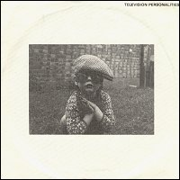
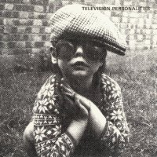

Television Personalities |
 1981 - Rough Trade - RT063 - 7" Songs: I Know Where Syd Barrett Lives Arthur The Gardener
Produced by Morgan Whittaker. Engineered by Sebastian Drew. |
 1990 - Overground - OVER013 - 7" Songs: I Know Where Syd Barrett Lives Arthur The Gardener
Produced by Morgan Whittaker. Engineered by Sebastian Drew. |